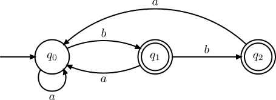
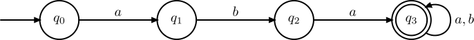
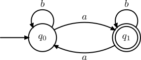

Automates finis
Dans le chapitre sur les langages réguliers, nous avons défini les mots et les langages formels. Nous avons décrit une certaine famille de langages appelée langages réguliers, qui sont décrits par un motif appelé expression régulière.
Une faiblesse des expressions régulières est qu'il est a priori difficile d'énoncer un algorithme général permettant de vérifier si un mot \(u\) appartient au langage dénoté par une expression régulière. Le formalisme est expressif, facile à utiliser de notre point de vue, mais difficile à mettre en oeuvre sur une machine.
Dans ce chapitre on introduit la notion d'automate est qui une machine simple permettant de reconnaître des mots, et donc des langages. Contrairement aux expressions régulières, ce formalisme s'implémente facilement et efficacement sur un ordinateur.
Les automates sont aussi très importants en informatique car ils constitue un premier exemple de machine formelle, c'est-à-dire une représentation abstraite d'une machine capable de calculer. L'exemple le plus célèbre de machine formelle est la machine de Turing mais pour bien la comprendre, il faut commencer par comprendre les automates.
Dans tout ce chapitre, on se fixe un alphabet \(\Sigma\) sur lequel on travaille.
1. Automates finis déterministes
A. Définition
Commençons par donner une vision intuitive de la machine que nous allons construire :
- un automate est une machine qui se situe à tout moment dans un certain état; elle a un nombre fini d'états possibles;
- un automate prend en entrée un mot qu'elle lit de gauche à droite, lettre par lettre;
- lorsque l'automate est dans un état \(q\) et qu'il lit une lettre \(c\), alors il transite vers un état \(\delta(q, c)\) qui ne dépend que de l'état actuel \(q\) et de la lettre lue \(c\).
Voici la définition formelle de cette machine :
Définition
Un automate fini déterministe (afd) est un quadruplet \(A = (Q, q_0, F, \delta)\) où :
- \(Q\) est un ensemble fini d'états;
- \(q_0 \in Q\) est un état particulier appelé état initial;
- \(F \subset Q\) est un ensemble d'états finaux;
- \(\delta : Q \times \Sigma \to Q\) est la fonction de transition de l'automate.
La fonction de transition \(\delta\) n'est pas nécessairement définie sur \(Q \times \Sigma\) en entier, autrement dit, pour certains états \(q\) et certaines lettres \(c\), \(\delta(q, c)\) peut ne pas être défini. Dans ce cas, on dit que l'automate bloque à la lecture de \(c\) dans l'état \(q\).
Un automate se représente plus volontier sous forme d'un graphe orienté, par exemple ainsi :

Dans cette représentation :
- les sommets du graphe représentent les états de l'automate
- les arcs représentent les transitions, l'étiquette d'un arc est la lettre lue
- une flèche entrante marque l'état initial
- un trait double entoure les états finaux
Ainsi, dans cet exemple, l'automate représenté est \(A = (Q, q_0, F, \delta)\) où :
- \(Q = \{q_0, q_1, q_2\}\)
- \(q_0 = q_0\)
- \(F = \{q_1, q_2\}\)
- \(\delta\) est la fonction de transition que l'on peut représenter sous forme de table de transition de l'automate :
| état \(q\) | lettre \(c\) | arrivée \(\delta(q, c)\) |
|---|---|---|
| \(q_0\) | \(a\) | \(q_0\) |
| \(q_0\) | \(b\) | \(q_1\) |
| \(q_1\) | \(a\) | \(q_0\) |
| \(q_1\) | \(b\) | \(q_2\) |
| \(q_2\) | \(a\) | \(q_0\) |
Remarque
Dans certains textes, les états finaux peuvent être marqués par une flèche sortante plutôt qu'un trait double.
B. Calcul d'un automate
Nous avons défini formellement un automate et il nous reste maintenant à décrire son fonctionnement c'est-à-dire décrire comment cette machine calcule.
Un automate est une machine capable de lire des mots. Lorsque l'automate est dans un état \(q_1\) et que l'on lit une lettre \(c\), l'automate transitionne vers l'état \(q_2 = \delta(q, c)\) (sauf s'il y a blocage). Pour tout état \(q_1\) et \(q_2\) et toute lettre \(c \in \Sigma\), on notera :
lorsque \(q_2 = \delta(q_1, c)\).
Notation alternative
Il est aussi possible de noter \(q_1.c = q_2\) lorsque \(\delta(q_1, c) = q_2\).
Définition (calcul)
Un calcul d'un automate fini déterministe \(A = (Q, q_0, F, \delta)\) est un chemin dans l'automate, c'est-à-dire une suite d'états :
où les \(w_i\) sont des lettres lues et qui vérifie bien :
Exemple (calcul d'un automate)
Dans l'automate :
est un calcul de l'automate qui correspond à la lecture du mot \(abbab\) depuis l'état \(q_0\) et qui mène en \(q_1\).
On remarque que pour un état de départ \(q\), et un mot \(u\) donné, il ne peut exister qu'un seul calcul depuis cet état, c'est pour cette raison que l'on dit que l'automate est déterministe : il n'a qu'un seul comportement possible à la lecture d'un mot en entrée. Cela peut être rendu explicite par la définition de la fonction de transition étendue :
Définition (fonction de transition étendue)
Soit \(A = (Q, q_0, F, \delta)\) un automate fini déterministe. On définit la fonction de transition étendue \(\delta^* : Q \times \Sigma^* \to Q\) par :
Ainsi, la fonction \(\delta^*\) étend la fonction \(\delta\) aux mots. Tout comme la fonction \(\delta\), elle n'est pas forcément définie sur \(Q \times \Sigma^*\) : la lecture d'un mot peut provoquer un blocage.
Notation alternative
Il est aussi possible de noter \(q_1.u = q_2\) lorsque \(\delta^*(q_1, u) = q_2\). Cette notation plus mathématique montre qu'on peut faire agir le monoïde \(\Sigma^*\) sur l'ensemble d'états \(Q\).
C. Langage reconnu
Définition (mot reconnu)
Soit \(A = (Q, q_0, F, \delta)\) un automate fini déterministe. Un mot \(u \in \Sigma^*\) est reconnu (on dit aussi accepté) par \(A\) lorsque \(\delta^*(q_0, u) \in F\).
Autrement dit, un mot est reconnu est par un automate si sa lecture à partir l'état initial \(q_0\) :
- ne provoque pas de blocage
- mène l'automate dans un de ses états finaux
Définition (langage reconnu)
Soit \(A = (Q, q_0, F, \delta)\) un automate fini déterministe. Le langage reconnu (aussi appelé langage accepté) par l'automate \(A\), noté \(\mathcal{L}(A)\) est :
Autrement dit, le langage reconnu est l'ensemble des mots reconnus par l'automate.
Définition (langage reconnaissable)
- Un langage \(L\) est dit reconnaissable par automate fini s'il existe un automate fini déterministe \(A\) tel que \(\mathcal{L}(A) = L\).
- L'ensemble des langages sur \(\Sigma\) reconnaissables par automate fini est appelé classe des langages reconnaissables. Elle sera notéee \(\def\rec#1{{\text{REC}(#1)}} \rec{\Sigma}\) dans ce cours.
Étudions maintenant quelques exemples de langages pouvant être reconnus par automate fini déterministe.
Exemple : mots commençant par ...
On souhaite reconnaître par automate le langage des mots sur \(\Sigma = \{a, b\}\) qui commencent par \(aba\), c'est-à-dire ayant \(aba\) pour préfixe. Pour cela, on peut proposer l'automate suivant :

- Une première phase où on lit le préfixe \(aba\), remarquer comme on utilise le blocage pour rejeter les mots qui ne commencent pas par \(aba\)
- Une seconde phase où on boucle sur l'état final, ce qui signifie qu'on accepte maintenant toute suite de lettres
Exemple : mots contenant un nombre impair de \(a\)
On souhaite reconnaître par automate le langage des mots sur \(\Sigma = \{a, b\}\) contenant un nombre impair de \(a\). Pour cela, on peut proposer l'automate suivant :

Conseil
Autant que possible, faites en sorte que chaque état de l'automate ait une signification propore comme dans les exemples précédents. Cela facilite à la fois la conception et la justification de l'automate.
Exercice
En vous inspirant de l'exemple précédent, proposer un automate pour reconnaître les mots sur \(\Sigma = \{a, b\}\) dont le nombre de \(b\) est de la forme \(3k + 1\) avec \(k \in \mathbb{N}\).
D. Programmation
Nous avions promis que les automates étaient bien plus simples à mettre en oeuvre sur un ordinateur que les expressions régulières. Voici donc un exemple d'implémentation en OCaml.
type etat = int;; (* Les etats sont representes par des numeros de 0 à |A|-1*)
type auto = {
taille: int; (* nombre d'états *)
init: etat;
final: etat list;
trans: (char * etat) list array; (* table de transitions *)
};;
Le seul point délicat de cette représentation est la table de transitions, c'est-à-dire la manière dont on représente la fonction de transition \(\delta\).
La représentation choisie est un tableau trans dans lequel chaque case trans.(i) contient les transitions sortantes de l'état \(i\).
Ces transitions sont représentées sous forme d'une liste de couples \((c, j)\) où \(c\) est la lettre lue et \(j\) l'état d'arrivée de la transition.
Cette représentation est analogue à celle des listes d'adjacence pour les graphes orientés.
Remarque
Ces listes sont appelées listes associatives. Elles servent à associer un état d'arrivée (valeur) à une lettre lue (clef). Autrement dit il s'agit d'une implémentation concrète de la structure de données abstraite de dictionnaire. On a choisi les listes associatives par simplicité mais nous aurions aussi pu utiliser une table de hachage ou encore un arbre binaire de recherche.
Définition d'un automate
Définissons en OCaml l'automate vu en début de chapitre :
Un avantage de l'utilisation des listes associatives est que la fonction List.assoc est déjà programmée pour vous dans la bibliothèque OCaml (sa programmation ne devrait poser aucun problème, faites-le en exercice). Cette fonction a pour signature List.assoc : 'a -> ('a * 'b) list -> 'b', elle prend en argument une clef et une liste associative et renvoie la valeur associée à cette clef. Si la clef n'existe pas dans la liste, alors l'exception Not_found est levée.
Pour nous, les clefs sont les lettres lues, les valeurs les états d'arrivée et l'exception Not_found est déclenchée lorsqu'il y a blocage. Implémentons la fonction de calcul d'un automate :
(* lit le mot u dans auto depuis l'etat q *)
let calcul auto q u =
let n = String.length u in (* le mot est une chaîne de caractères *)
let etat_courant = ref q in (* on se sert d'une référence pour mémoriser l'état courant *)
for i = 0 to n-1 do
let nouvel_etat = List.assoc u.[i] auto.trans.(!etat_courant) in
etat_courant := nouvel_etat
done;
!etat_courant
;;
Not_found en cas de blocage. Nous pouvons maintenant programmer la fonction
qui teste si un mot est accepté ou non par un automate :
let est_reconnu auto u =
try
(* on calcule l'etat d'arrivée en fin de lecture du mot *)
let etat_fin = calcul auto auto.init u in
(* on teste s'il est final *)
List.mem etat_fin auto.final
with
(* Si Not_found est levé, il y a blocage, le mot n'est pas accepté *)
Not_found -> false
;;
Les automates sont efficaces !
Les automates se programment assez rapidement mais surtout ils sont efficaces. La lecture d'un mot \(u\) est de complexité linéaire \(O(|u|)\). Encore mieux, l'automate lit en fait une et une seule fois chaque lettre de gauche à droite.
2. Opérations classiques sur les automates
A. Accessibilité et émondage
B. Complétion d'un automate
C. Automate complémentaire
D. Automate produit
3. Automates finis non déterministes
4. Automates finis non déterministes à transitions spontanées
5. Langages non reconnaissables par automate
Il existe des langages qui ne peuvent pas être reconnus par un automate fini. Le théorème suivant permet de démontrer que certains langages ne sont pas reconnaissables.
Théorème (Lemme de l'étoile)
Soit \(L\) un langage reconnu par un automate à \(N\) états. Soit \(u \in L\) un mot de longueur \(|u| \geq N\), alors il existe 3 mots \(x, y, z \in \Sigma^*\) tels que \(u\) se décompose en \(u = xyz\) et vérifiant :
- \(|xy| \leq N\)
- \(y \neq \varepsilon\)
- \(\forall k \in \mathbb{N},\ xy^kz \in L\)
Démonstration
Soit \(L\) un langage reconnu par un automate \(A = (Q, q_0, F, \delta)\) à \(N\) états et \(u \in L\) un mot de longueur \(|u| \geq N\). Notons \(p_k\) (\(0 \leq k \leq N\)) le préfixe de \(u\) de longeur \(k\). On considère l'application
Remarquons que cette application est bien définie, car \(u\) est reconnu par \(A\) donc il n'y a pas de blocage à la lecture des préfixes de \(u\).
Comme \(\text{Card}([|0, N|]) = N+1\) et \(\text{Card}(Q) = N\), l'application \(\varphi\) n'est pas injective. Il existe donc deux entiers \(0 \leq k_1 < k_2 \leq N\) tels que \(\varphi(k_1) = \varphi(k_2)\). Informellement, cela signifie que la lecture de \(u\) depuis l'état \(q_0\) va conduire au passage par un même état à deux instants \(k_1\) et \(k_2\) distincts. Notons \(q' = \varphi(k_1)\) cet état qui est visité au moins deux fois.
On pose alors \(x = p_{k_1}\), \(y\) tel que \(xy = p_{k_2}\) et \(z\) tel que \(xyz = u\). On a alors \(\delta^*(q_0, x) = \delta^*(q_0, xy) = q'\). Vérifions que cette décomposition fonctionne :
- \(|xy| = |p_{k_2}| = k_2 \in [|0, N|]\)
- Si \(y = \varepsilon\) alors \(x = xy\) ce qui implique \(k_1 = k_2\), c'est exclus.
-
On montre par récurrence sur \(k\) que \(\delta^*(q_0, xy^kz) = \delta^*(q_0, u)\) ce qui montre que \(xy^kz\) est reconnu car \(u\) l'est.
a. Initialisation : \(\delta^*(q_0, xz) = \delta^*(\delta^*(q_0, x), z) = \delta^*(q', z) = \delta^*(\delta^*(q_0, xy), z) = \delta^*(q_0, xyz)\)
b. Hérédité : on suppose la propriété vraie au rang \(k \in \mathbb{N}\), montrons-là au rang \(k+1\) :
\[ \begin{align} \delta^*(q_0, xy^{k+1}z) &= \delta^*(\delta^*(\delta^*(q_0, xy), y^k), z) = \delta^*(\delta^*(q', y), z) \\ &= \delta^*(\delta^*(\delta^*(q_0, x), y^k), z) = \delta^*(q_0, xy^kz)\\ &= \delta^*(q_0, xyz) \text{ par hypothèse de récurrence} \end{align} \]
Savoir démontrer qu'un langage n'est pas reconnaissable ne s'improvise pas et il faut étudier attentivement les méthodes permettant d'obtenir ce résultat.
Point méthode : démontrer qu'un langage \(L\) n'est pas reconnaissable avec le lemme de l'étoile
- On suppose par l'absurde que \(L\) est reconnu par un automate à \(N\) états.
- On choisit judicieusement un mot \(u \in L\) particulier de longueur \(|u| \geq N\)
- On invoque le Lemme de l'étoile ce qui nous permet d'obtenir la décompostion \(u = xyz\).
- À l'aide des propriétés (1), (2) et (3) du lemme de l'étoile, on aboutit à une absurdité.
Exemple clé : \(\{a^n b^n, n \in \mathbb{N}\}\)
Démontrons que langage \(L = \{a^nb^n, n \in \mathbb{N}\}\) n'est pas reconnaissable.
- Supposons par l'absurde que \(L\) soit reconnaissable et qu'il est reconnu par un automate à \(N\) états.
- Considérons le mot \(u = a^N b^N\), alors \(u \in L\) et \(|u| = 2N \geq N\).
- D'après le lemme de l'étoile, il existe donc 3 mots \(x, y, z \in \mathbb{N}\) tels que
- \(|xy| \leq N\)
- \(y \neq \varepsilon\)
- \(\forall k \in \mathbb{N},\ xy^kz \in L\)
- D'après (a), \(x\) et \(y\) ne contiennent que des lettres \(a\). De plus, d'après (b), \(y\) contient au moins un \(a\). D'après (c), on doit avoir \(|xy^kz|_a = |xy^kz|_b\) pour tout \(k \in \mathbb{N}\) car les mots de \(L\) contiennent autant de \(a\) que de \(b\). Ceci est absurde, car d'après nos remarques :
La première quantité croît strictement lorsque \(k\) croît tandis que la seconde reste constante. C'est absurde. Donc \(L\) n'est pas reconnaissable.
Point méthode : démontrer qu'un langage \(L\) n'est pas reconnaissable en utilisant les propriétés de clôture
Pour utiliser cette méthode, il faut exploiter un langage \(L_2\) dont on sait déjà qu'il n'est pas reconnaissable (hypothèse de l'énoncé ou on l'a démontré avant).
- On suppose par l'absurde que \(L\) est reconnaissable.
- On montre que \(L_2\) peut s'obtenir à partir de \(L\) et d'autres langages reconnaissables en utilisant des opérations qui préservent le caractère reconnaissable (complémentaire, intersection finie, union finie, ...)
- On en déduit que \(L_2\) est reconnaissable : c'est absurde.
Exemple clé : \(\{ u \in \{a,b\}^*, |u|_a = |u|_b \}\)
Montrons que \(L = \{ u \in \{a,b\}^*, |u|_a = |u|_b \}\) n'est pas reconnaissable. On sait que le langage \(L_2 = \{a^n b^n, n \in \mathbb{N} \}\) n'est pas reconnaissable (exemple précédent).
- Supposons par l'absurde que \(L\) est reconnaissable.
- On pose \(K\) le langage dénoté par \(a^*b^*\), il est reconnaissable (il est facile de proposer un automate). On remarque de plus que \(L \cap K = L_2\).
- Comme l'intersection de deux langages reconnaissable est reconnaissable, on en déduit que \(L_2\) est reconnaissable : c'est absurde.
Cette seconde méthode, quand on peut l'appliquer, permet de gagner du temps en évitant d'invoquer le lemme de l'étoile. La lectrice pourra vérifier qu'on peut aussi résoudre ce deuxième exemple en utilisant la première méthode.
Raisonnements faux usuels
On retrouve souvent les raisonnements faux suivants :
- Une sous-partie d'un langage non reconnaissable est non reconnaissable : \(L \subset L'\) avec \(L'\) non reconnaissable donc \(L\) est non reconnaissable.
- Si je contiens une partie non reconnaissable alors je suis non reconnaissable : \(L' \subset L\) avec \(L'\) non reconnaissable donc \(L\) est non reconnaissable.
Dans le premier cas, cela montrerait par exemple que \(\varnothing\) n'est pas reconnaissable. Dans le second cas, si on prend \(L = \Sigma^*\) on obtiendrait que \(\Sigma^*\) n'est pas reconnaissable.
A RETENIR : les raisonnements par inclusion sont faux dans ce contexte